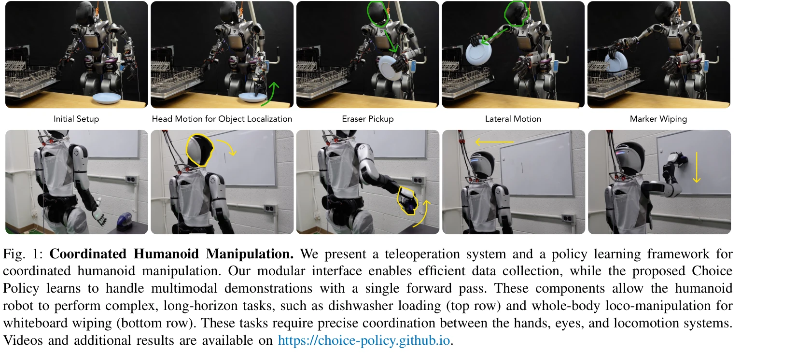
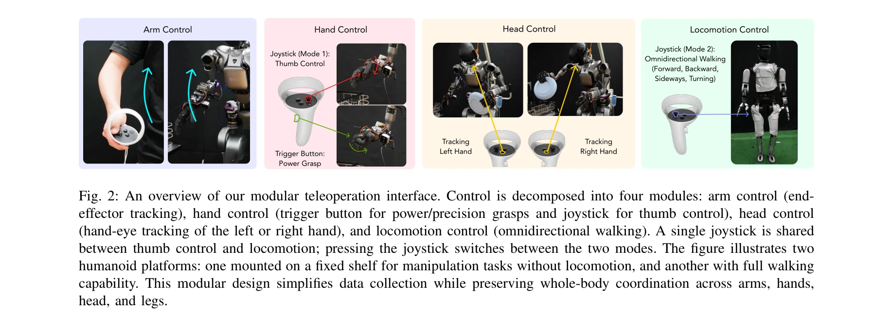

저자: Haozhi Qi, Yen-Jen Wang, Toru Lin, Brent Yi, Yi Ma, Koushil Sreenath, Jitendra Malik | 날짜: 2025-12-31 | DOI: 10.48550/arXiv.2512.25072

Fig. 1: Coordinated Humanoid Manipulation. We present a teleoperation system and a policy learning framework for
휴머노이드 로봇의 전신 협조 조작을 위해 모듈식 텔레오퍼레이션 인터페이스와 Choice Policy라는 모방 학습 방식을 결합한 시스템을 제시한다. Choice Policy는 다중 후보 행동을 생성하고 점수를 학습하여 멀티모달 행동을 효율적으로 모델링한다.
Fig. 1: Coordinated Humanoid Manipulation. We present a teleoperation system and a policy learning framework for

Fig. 2: An overview of our modular teleoperation interface. Control is decomposed into four modules: arm control (end-
총평: 이 논문은 휴머노이드 전신 조작을 위한 실용적이고 확장 가능한 시스템을 제시하며, Choice Policy는 멀티모달 행동 모델링에서 효율성과 표현력의 균형을 잘 달성했다. 모듈식 텔레오퍼레이션과 함께 실제 로봇 작업에서의 성공적 검증은 고가치의 실제 기여를 보여준다.